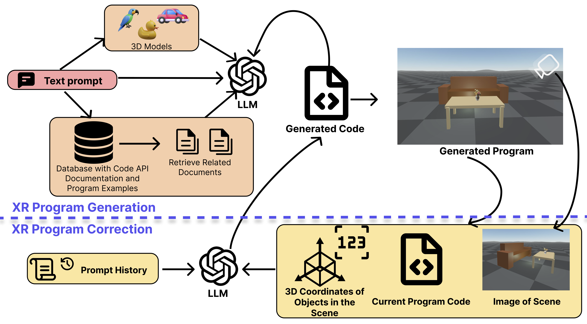

GenAssist
Interactive Prompt-Driven XR Program Generation
IEEE VR '26
Overview
GenAssist is a system designed to make building interactive XR experiences fast and accessible using natural language. Users describe what they want to create, and GenAssist generates a runnable XR program that places 3D objects, loads models, adds animations, and defines interactions in a virtual scene. The system supports iterative development, allowing users to refine and extend their scene simply by updating their prompts as their ideas evolve. GenAssist targets rapid prototyping, learning, and experimentation, lowering the barrier to XR creation for users who may not have traditional programming or 3D design expertise.
Example GenAssist XR programs generated from prompts

How GenAssist Works
At the core of GenAssist is a closed-loop correction mechanism that mimics how human developers build and test XR programs. After generating and executing a program, the system inspects the scene using virtual cameras to render an image of the scene, capture 3D coordinates of the objects, as well as scene state to determine whether the result matches the user’s intent. When errors or mismatches are detected—such as missing objects, incorrect placements, or broken interactions—GenAssist automatically updates the program and re-runs it. To make this process reliable, the system grounds each generation step using Retrieval-Augmented Generation (RAG), pulling relevant documentation and example code to ensure corrections are syntactically valid and platform-aware. Together, retrieval and correction enable GenAssist to converge on working XR programs through iterative self-improvement rather than one-shot generation.